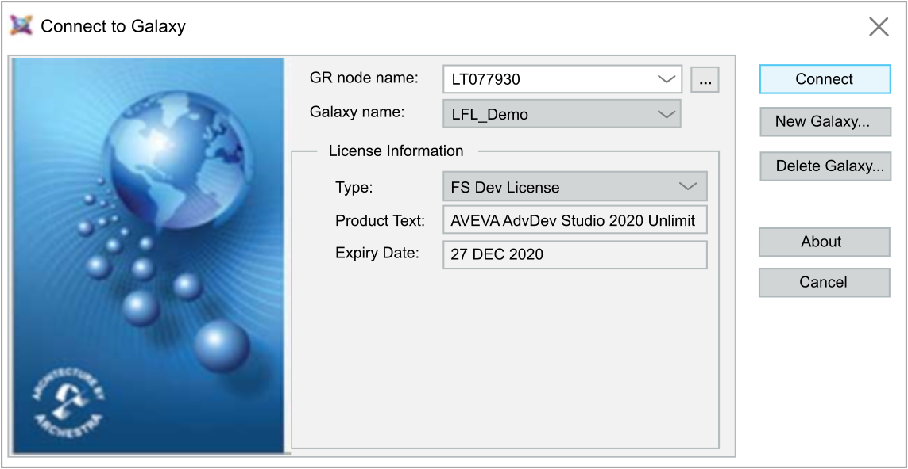

In the Deploy and Diagnostic editor, select the AVEVA Server device.
Select
In the ASP IDE, connect the Galaxy configured in the EcoStruxure Automation Expert solution:

If you want to view the created AppObjects, sync the changes as described in 9. Syncing the Instances to the AVEVA System Platform
and launch the ASP IDE.When operations related to Asset Link for AVEVA OMI are in progress, you cannot delete a Galaxy right away:
| NOTE | |
|---|---|